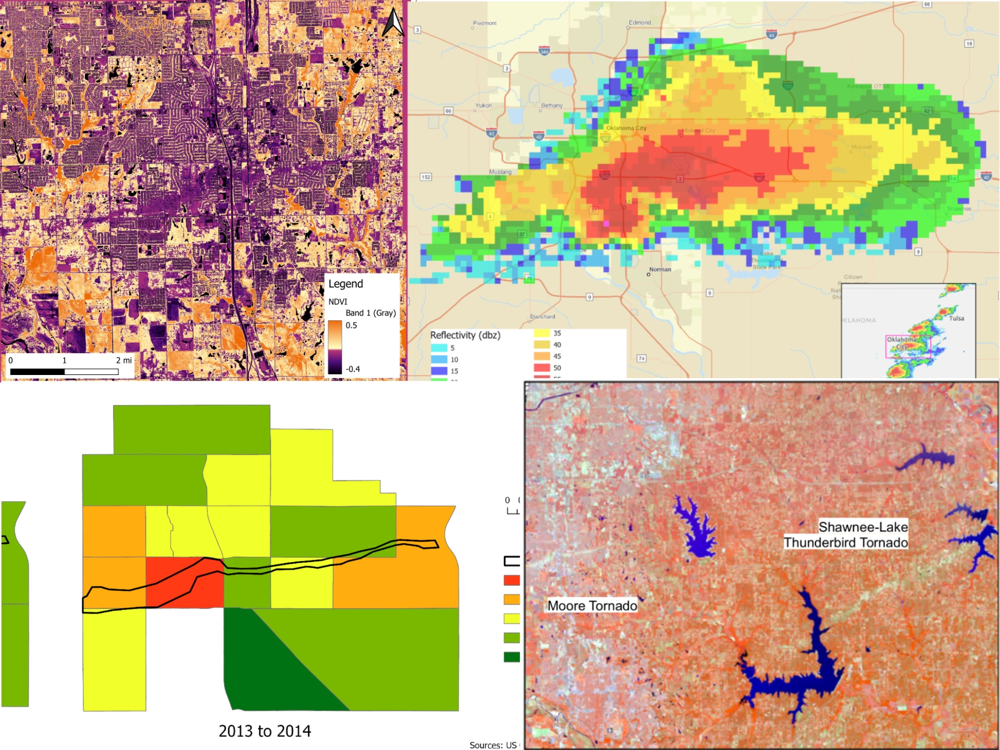

GIS Final Project: Impacts of the Moore Tornado
Karen Wang, Victor Thaxton, Madelyn Walker, Kaya Beaudoin
Project Description
This project used post-storm satellite data to assess the impact of the 2013 Moore, Oklahoma tornado. GIS and remote sensing tools were used to analyze damage patterns and overlay critical infrastructure.